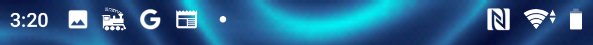

Frequently Asked Questions
Connecting - Wifi and WiThrottle
Why doesn’t my Android device automatically connect to my WiFi network?
I have noticed that some older android phones won’t automatically reconnect to a network that does not have internet access, and nothing I have been able to do can resolve it.
I have in the past put a shortcut on the homepage to the network settings to make it easy to get there and select the network, before starting ED.
I can’t connect to my Server /Railroad
Check the following:
Check that your device/phone is connected to a WiFi network
Check that your device/phone is connected to the same WiFi network as your WiThrottle Server or DCC-EX Server
If using JMRI, check that JMRI and its WiThrottle Server feature are started
Possible Mobile data connection problem
If Engine Driver can see the WiThrottle Server or DCC-EX Server but displays an error when you try to connect to it… If you are using a phone with a SIM, and the WiFi network your JMRI server is on does not have internet access. You may have to turn ‘mobile data’ off on your device. See [here] for more information.
I am getting lots of ‘Disconnects’
See the WiFi Issues page for assistance.
Engine Driver Connects, but I can’t control any locos
Powering the layout on
Some DCC Command Stations need you to turn the track power on before you can use it.
Note
See the Turn Track Power On notes for more information.
Why doesn’t Engine Driver automatically find my WiThrottle Server or DCC-EX Server?
I can manually connect to my Server / Railroad by entering an IP address, but it never finds it automatically.
A1. Make sure that the Android System ‘Use Location’ is enabled. This must be enabled for Engine Driver to ‘find’ servers on the network.
A2. 4.5ghz and 5ghz. Some routers do not transfer the mDNS messages between clients on the 4.5ghz and 5ghz channels. So if your Command Station/Server is using 4.5ghz, make sure you device/phone is using a 4.5ghz channel as well. (Or both use 5ghz channels.)
A3. Mesh Routers. Many Mesh routers will not transfer the mDNS messages to other connected routers / modems. If you are using a mesh network, make sure both the Command Station/Server and the device/phone are using the same Mesh network.
A4. One reason can be your router doesn’t not support the Bonjour/mDNS protocol. There is not much you can do if this is the case other than trying a different router.
If Engine Driver can’t find my Server/Railroad automatically
Look for the IP address and port in the WiThrottle window in JMRI
Type them in the two fields and press Connect
Why doesn’t Engine Driver remember the servers I have connected to?
Check the Engine Driver preferences and make sure the
Maximum Recent Locospreference is not set to zero.
Connecting to different servers/railroads
I want to switch to a different server on the same network.
You need to exit Engine Driver and restart.
I want to switch to a different server on a different network.
You need to exit Engine Driver, change WiFi networks in the Android settings, then restart Engine Driver.
Save/load preferences for different servers
You can set up different preferences for different server/railroads and have them automatically load when you connect to that WiThrottle Server or DCC-EX Server. The most common use of this (so far) is to remember the locos relevant to that railroad. e.g. I run N scale and HO Scale. When I connect to one of the N Scale layouts I use it shows me my N Scale locos in the recent locos list, but when I connect to one of the HO layouts I use, it shows me the my recently used HO locos.
Note
See the Auto Host Specific Import/Export preference for more information.
What is this jmri.mstevetodd.com in the server list?
jmri.mstevetodd.com is a demo server, which can be used for testing. It has Server Roster entries, turnouts, routes and an active panel for you to try.
Note
You can use the Hide Demo Server? preference to permanently remove it from the list if you wish.
How do I clear unwanted servers from the list
Swipe right on an entry to remove it.
Running Engine Driver in Background
Q. Why do my trains stop when I run another app?
Q. Why do my trains stop when I lock my phone screen?
Engine Driver is not designed to run in the background.
Warning
Engine Driver is not designed to run in background and its performance and continued operation is not reliable or predictable.
You should not lock the screen of your Android device/phone while using Engine Driver for the same reason.

By using the Android Home ( ○ ) or Recent Apps ( □ ) navigation buttons, or if you press the
Powerphysical button, it is possible to push the Engine Driver app into the background. Engine Driver will give a sound, warning and will add an entry to the Notification Shade when this happens.While Engine Driver will attempt to continue to run in background, it is at the mercy of the Android OS. Android itself is designed to kill dormant apps, which it will consider this to be, if it thinks there is a better use of the memory or processor, so it can be terminated at any time without warning.
In general avoid letting Engine Driver try to run in background.
Refer to Pushing the app to the Background for more information.
{kind=link}
Why is Engine Driver still running when I closed the app?
If you exit Engine Driver using the Android Back navigation button and answer Yes to the prompt, Engine Driver will close and stop running.
However, if you use the Android Home ( ○ ) or Recent Apps ( □ ) navigation buttons, or if you press the
Powerphysical button, Engine Driver will continue to run in background. Engine Driver will give a sound, warning and will add an entry to the Notification Shade when this happens.This is not the same as closing the app.
Refer to Pushing the app to the Background for more information.
Why is Engine Driver still running when I look at the running apps list?
Android does not have a ‘running apps’ list. It has a ‘recent apps’ list. This is a list of the apps you have used recently, not necessarily the ones that are running.
When you press the Recent Apps ( □ ) navigation button, Engine Driver may be in this list if you have used it recently, even if it is not running.
You can remove Engine Driver from this list by swiping it to the right or up, depending on the version of Android.
Selecting locomotives to control
Why can’t I can’t see my loco in the Server Roster?
The loco needs to be added to the Server Roster on your server computer. Refer to your server documentation for specifics.
Why is my loco is not remembered in the recent locos list?
If the loco is in your Server Roster, check the preference
Roster in Recent Locos?so that locos in the Server Roster will be included in the recent locos list.
If no locos are remembered (and you have confirmed the preference above) make sure the
Maximum Recent Locospreference is not set to zero.
How do I work with Consists / Multiple Units / Multiple Units|
On the fly Consists / Multiple Units in Engine Driver
Engine Driver can create Consists / Multiple Units on-the-fly by simply selecting multiple locos, one after the other…
Note: Make sure that the Drop Loco before acquire? preference is disabled (not selected).
DCC ‘Advanced Consists’ (CV19)
If you are using WiThrottle Protocol you can’t create a DCC ‘Advanced Consists’ (CV19) with Engine Driver, but you can control one if it has already been setup.
If you are using DCC-EX, you can create a DCC ‘Advanced Consists’ (CV19) with Engine Driver. See the Using the DCC-EX Native Protocol page for more information on changing CVs.
Remember that this type of Consist / Multiple Unit can cause problems later if the loco has not been removed from the consist first and you want to control it as an individual loco.
JMRI Consists
Creating Consists / Multiple Units in JMRI effectively creates DCC ‘Advanced Consists’ (CV19) and appear in the loco list in Engine Driver much like any other loco.
Refer to the JMRI: Consisting Tool for more information.
I can’t create on-the-fly Consists / Multiple Units ?
Make sure that the Drop Loco before acquire? preference is disabled (not selected).
The lights of the locos in my consist are wrong?
If you use on-the-fly Consists / Multiple Units, you can control the lights by pressing
Selectthen press on theEdit Lightsbutton
You can control the lights with a Long press on the
SelectLoco button, if you enable the Control consist Lights on long press preference.
Can’t control my loco?
If you can control the lights but not the motor, check that the loco is not in a ‘normal’ or ‘advanced’ consist.
I sometimes accidently press the volume keys
You can disable the volume keys with the Disable Volume keys? preference.
I sometimes accidently press the direction button when changing speed
You can:
Disable the Direction change while moving? preference (recommended)
No Locomotive Icons appear in the Server Roster
The Server Roster List, and Recent Locos List on the Select Loco screen will automatically show icons for your locos only if:
The Web Server (not just the WiThrottle Server) is running on the JMRI server
The loco itself has an icon added for it in the JMRI Server Roster
ORA locally cached or manually chosen image is available for the loco (see ‘Locomotive Icons’ on the Operation screen)
Note the DCC-EX EX-CommandStation and all other known Commands stations cannot provide Server Roster icons. Only JMRI is know to be able to provide this service.
Why can’t I control 6 locos
only the ‘Simple’, ‘Tablet Switching/Shunting’ and ‘Tablet Vertical’ throttle layouts allows for (up to) 6 throttles.
Also, once you have selected a throttle layouts allows for more throttles, you must also increase the number of throttles displayed with the throttle layouts preference.
Changing the appearance of Engine Driver
Global changes (Themes)
I want to change the appearance of the app
You can switch between different themes by changing the preference.
The ‘Original’ (Checker Plate) theme
The ‘High Contrast’ Theme. Similar to the original theme, without the textured background with deeper blacks and brighter whites.
The ‘High Contrast Outline’ theme. For people who like white text on a black background.
The ‘Dark’ theme.
The ‘Colourful’ theme.
the ‘Neon Blue’ theme
Changing the Throttle screen
I want to change the appearance of Throttle Screen
There are a number of different Throttle Screen designs/layouts. Look at the Operation screen for details.
Default / Original /Horizontal
Simple
Vertical
Vertical Left
Vertical Right
Big Buttons - Left
Horizontal Switching/Shunting
Vertical Switching/Shunting
Vertical Switching/Shunting Left
Vertical Switching/Shunting Right
Tablet Switching/Shunting Left
Tablet Switching/Shunting Right
Semi-Realistic Left
Engine Driver will automatically reload the throttle sceen after closing the preferences screen.
See the Throttle Screen Layout preference for more information on the different layouts.
I want vertical sliders, not horizontal
See the ‘Simple’, ‘Vertical’ and ‘Tablet’ throttle screen type options above.
See the Throttle Screen Layout preference for more information on the different layouts.
I want to control more than one train
You can control between one and six trains with Engine Driver, depending on which Throttle Screen type (see above) you have chosen. Each train can have one or more locomotives in Consist / Multiple Unit.
The screen space is shared between throttles, so set the ‘Number of Throttles’ appropriately.
Note that the different Throttle Screen options (above) support different numbers on throttles.
In want to change the labels of the function buttons that are displayed
Change the function button defaults in Engine Driver, for locos without Server Roster Entries
Server Roster entries include function button labels, and can be changed when defined to the server
My locos have different functions but all the Function buttons appear the same for every locomotive
There is a Preference “Use default function labels?” which can override the labels from the Server Roster entry. Confirm that you have not turned it on.
You need to setup the individual functions for each of your locos in JMRI.
My loco shows the wrong Function labels
Functions of loco are generally set in the Server Roster. Engine Driver may be showing the functions of a loco with the same address from the Server Roster.
This can happen if you entered an address to select the loco rather than selecting from the Server Roster list.
You can force the default function labels in the preferences.
Immersive mode (Full Screen)
Immersive mode hides the system navigation buttons at the bottom of the screen on the Throttle screen only, to give you more screen real estate for the throttle UI.
It can optionally also hide the Android System Status Bar at the top of the page.
Swiping up from off screen will normally temporarily show the Android navigation buttons again.
Showing the web page on the throttle screen
It is possible to show a web browser at the top or bottom of the throttle screen. Your JMRI Layout panels, Turnouts/Points or Routes can be displayed here if you have configured them in JMRI.
See the Web View Area (Throttle Web View)
See the Throttle Web View Preferences for more information.
Showing the Turnouts/Points or Routes on the throttle screen
Unfortunately it is not possible to show the Engine Driver Turnouts/Points screen or Routes screen on the throttle screen.
This is on our todo list, but it has no ETA.
However if you are using JMRI, your Layout panels, Turnouts/Points or Routes can be displayed in a web page on the Throttle screen. See Showing the web page on the throttle screen.
Loco selection screen
Todo
LOW: FAQ Loco selection screen
Locos in the roster not showing
check you don’t have a filter enabled. See Filter the Roster for more information.
The Roster takes a few seconds to load. If you have a large roster, it wil take longer. Until it is loaded, you will not see any roster entries.
Some devices (e.g. LnWi) have no provision for a roster.
Changing the Connection screen
I can’t remove test server (jmri.mstevetodd.com) by swiping right.
You can’t remove it with a swipe, but there is a preference to remove it from the list. See the Hide Demo Server preference for more information.
Changing the Turnouts/Points screen
I would like to change the Turnouts/Points Screen.
Other than filtering the list, you can’t change/configure the Turnouts/Points Screen.
Changing the Routes screen
I would like to change the Routes Screen.
Other than filtering the list, you can’t change/configure the Routes Screen.
Conserving power on your phone/tablet
My Phone/table runs out of power too quickly
You should
Keep the brightness of the device/phone as low as practical
Disable Bluetooth and NFC if you are not using them
You can also try:
Set the preference to dim screen on swipe up. If you are not using the throttle temporarily (i.e the train does not need any control for a little while), dim the screen until you need it back.
Set the preference to dim screen on shake. If you are not using the throttle temporarily (i.e the train does not need any control for a little while), dim the screen until you need it back.
If your device has an AMOLED display, theoretically, the High Contrast Outline theme should use less power (though this is unproven).
Note
See the Conserving Battery Power page for more information.
Virtual Sounds / In Phone Loco Sounds (IPLS)
I can’t hear the In Phone Loco Sounds (IPLS)
Adjust the ‘Ring and Notification volume’ in the Android System Settings. (the volume buttons on the side of the device/phone don’t adjust this setting by default.)
The IPLS feature of Engine Driver uses the Notification features of Android, not the Media Player features.
That means that, at the Android system level, the volume is controlled by the ‘Ring and Notification volume’ not the ‘Media volume’.
Reading/Writing Decoder CVs
I would like to read and/or change my decoder CVs.
If you are using WiThrottle Protocol, you can’t read CVs with Engine Driver.
Howerver, for some Command Stations it may be possible to write to decoders using Programming on the Main (PoM).
See the Programming on the Main (PoM) page for more information.
If you are using DCC-EX, you can read and write CVs with Engine Driver.
See the Using the DCC-EX Native Protocol page for more information.
DCC-EX Features
I can’t see the DCC-EX features when I connect to my DCC-EX EX-CommandStation.
The DCC-EX features are only available when you connect to a DCC-EX EX-CommandStation using the Native DCC-EX Protocol.
To use the Native DCC-EX Protocol you have to select it before you connect to your server.
While you can set the individual preferences, the easiest way do this is to re-run the Setup Wizard from the menu in Connection Screen and select that you will be using a DCC-EX EX-CommandStation on the last page of the Wizard.
Note: the Setup Wizard is only available from the menu in Connection Screen! Not from other screens.